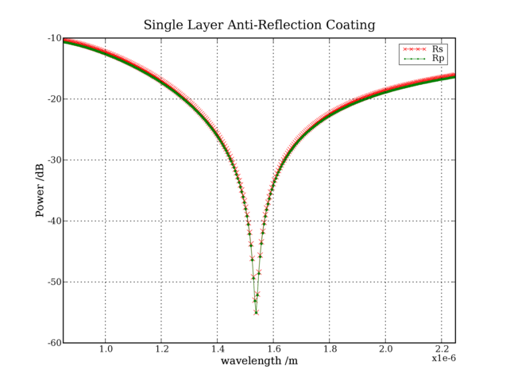
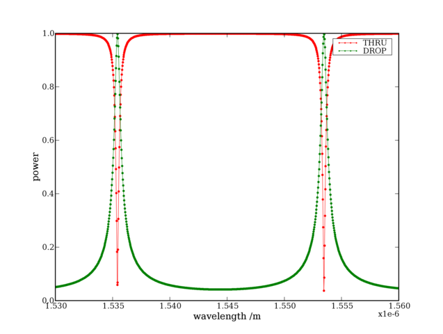

EMpy
EMpy (Electromagnetic Python) (not to be confused with Empy) is a suite of numerical algorithms widely used in electromagnetism.
The package contains:
- an isotropic and anisotropic transfer matrix algorithm;
- an isotropic and anisotropic rigorous coupled wave analysis (RCWA) algorithm;
- the numerical model of the frequency response of different well-known devices (Mach-Zehnder, Ring Resonators, etc.).
This list, very short by now, will hopefully enlarge to include an FDTD and an interface to the many very good software used in electromagnetism out there.
Examples
More (and more up-to-date) examples are available in the source code.
Here are some simple examples of the EMpy's functionalities. More will come as soon as possible. Impatients can look at the examples in the distribution source.
- Single Layer Anti-Reflection Coating
- Anisotropic Multilayer
- Single Ring Resonator
- N-Rings Resonator
- Finite Difference Fully Vectorial Modesolver
- Multilayer with grating
Single Layer Anti-Reflection Coating
The isotropic transfer matrix algorithm can be used to study anti-reflection coatings. A very simple single layer anti-reflection coating, described here, is computed by the following script.
#!/usr/bin/python # taken from http://hyperphysics.phy-astr.gsu.edu/hbase/phyopt/antiref.html#c1 import numpy, EMpy, pylab # define multilayer n = numpy.array([1.,1.38,1.9044]) d = numpy.array([numpy.inf,387.5e-9/1.38,numpy.inf]) iso_layers = EMpy.utils.Multilayer() for i in xrange(n.size): iso_layers.append(EMpy.utils.Layer(EMpy.materials.IsotropicMaterial('mat').setRixFromConst(n[i]),d[i])) # define incident wave plane theta_inc = EMpy.utils.deg2rad(10.) wls = numpy.linspace(0.85e-6,2.25e-6,300) # solve solution_iso = EMpy.transfer_matrix.IsotropicTransferMatrix(iso_layers, theta_inc).solve(wls) # plot pylab.figure() pylab.plot(wls, 10*numpy.log10(solution_iso.Rs), 'rx-', wls, 10*numpy.log10(solution_iso.Rp), 'g.-') pylab.legend(('Rs', 'Rp')) pylab.title('Single Layer Anti-Reflection Coating') pylab.xlabel('wavelength /m') pylab.ylabel('Power /dB') pylab.grid() pylab.xlim(wls.min(), wls.max())
In the lines 8-12 the multilayer is defined. Indices and thicknesses are chosen so that a single layer of refractive index 1.38 and thickness about one quarter of the central wavelength 1.55um is positioned between two semi-infinite layers of air and glass. This gives theoretically no reflection for the central wavelength. The following graph is the result, which confirms the theoretical predictions.
The graph shows two curves, one for each polarization. They differ because the incident plane wave is tilted by 10 degrees (line 15).
Anisotropic Multilayer
The anisotropic transfer-matrix can be used to study the following example.
#!/usr/bin/python import numpy, EMpy, pylab # define the multilayer epsilon = [1.0**2 * EMpy.constants.eps0 * numpy.eye(3), \ EMpy.constants.eps0 * numpy.diag([2.1, 2.0, 1.9]), \ 2.3**2 * EMpy.constants.eps0 * numpy.eye(3), \ 4.3**2 * EMpy.constants.eps0 * numpy.eye(3), \ 3.0**2 * EMpy.constants.eps0 * numpy.eye(3)] d = numpy.array([numpy.inf,1e-6,2.3e-6,0.1e-6,numpy.inf]) aniso_layers = EMpy.utils.Multilayer() for i in xrange(len(epsilon)): aniso_layers.append(EMpy.utils.Layer(EMpy.materials.AnisotropicMaterial('Air'). setEpsilonTensorFromConst(epsilon[i]), d[i])) # define the planewave theta_inc_x = EMpy.utils.deg2rad(0.) theta_inc_y = 0. wls = numpy.linspace(1.4e-6,1.7e-6,100) # solve solution_aniso = EMpy.transfer_matrix.AnisotropicTransferMatrix(aniso_layers, theta_inc_x, theta_inc_y).solve(wls) # plot pylab.figure() pylab.plot(wls, solution_aniso.R[0,0,:], \ wls, solution_aniso.R[1,0,:], \ wls, solution_aniso.R[0,1,:], \ wls, solution_aniso.R[1,1,:], \ wls, solution_aniso.T[0,0,:], \ wls, solution_aniso.T[1,0,:], \ wls, solution_aniso.T[0,1,:], \ wls, solution_aniso.T[1,1,:]) pylab.legend(('Rss', 'Rps','Rsp', 'Rpp','Tss', 'Tps','Tsp', 'Tpp')) pylab.title('Anisotropic Multilayer') pylab.xlabel('wavelength /m') pylab.ylabel('Power /dB') pylab.xlim(wls.min(), wls.max()) pylab.show()
Four curves are clearly visible because the two polarizations behave in a different way, even if the incidence is normal (line 16-17), because of the anisotropic material (line 5).
Single Ring Resonator
This is the script to study a single ring resonator:
import EMpy import numpy import pylab wls = numpy.linspace(1.53e-6, 1.56e-6, 1000) K1 = EMpy.devices.Coupler(wls, numpy.sqrt(0.08), 1.) K2 = EMpy.devices.Coupler(wls, numpy.sqrt(0.08), 1.) l1 = numpy.pi * 5e-6 l2 = numpy.pi * 5e-6 SWG = EMpy.devices.SWG(488, 220, 25).solve(wls) SRR = EMpy.devices.SRR(K1, K2, SWG.neff, l1, l2).solve() pylab.plot(wls, numpy.absolute(SRR.THRU), 'r.-', wls, numpy.absolute(SRR.DROP), 'g.-') pylab.axis('tight') pylab.ylim([0, 1]) pylab.xlabel('wavelength /m') pylab.ylabel('power') pylab.legend(('THRU', 'DROP')) pylab.show()
In lines 4 and 5 the two coupling coefficients and the two coupler losses are defined. The length of the ring is defined in line 6, while its effective index is supposed to be the one of a silicon rib waveguide of 488nm x 220nm at room temperature.
This is its spectrum: 
The maximum drop power is 0 dB because no losses are considered, and periodic with the period being the FSR of the ring.